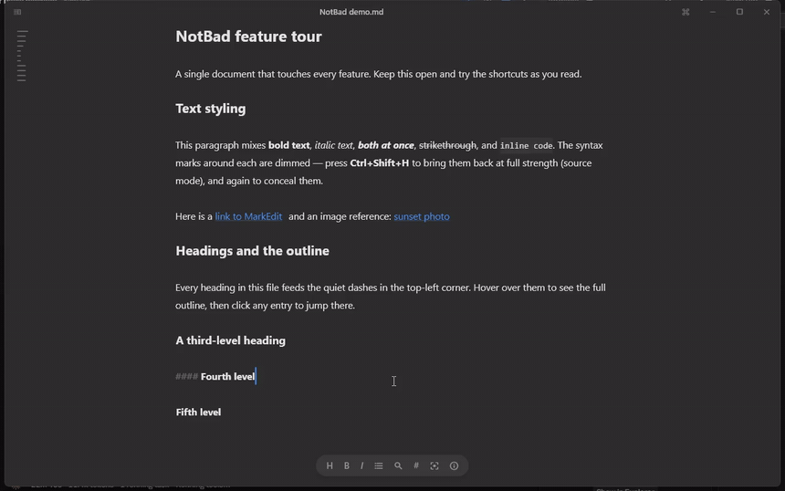
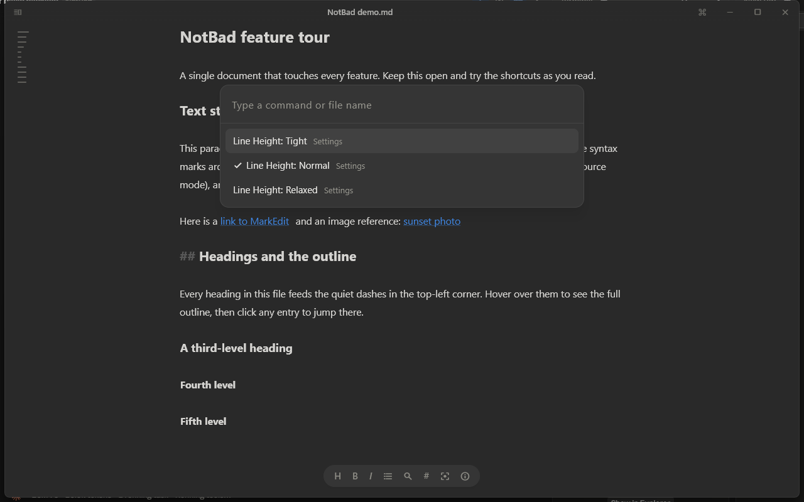
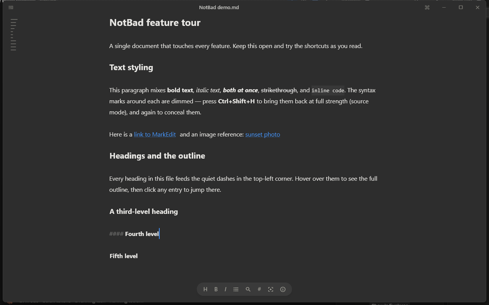
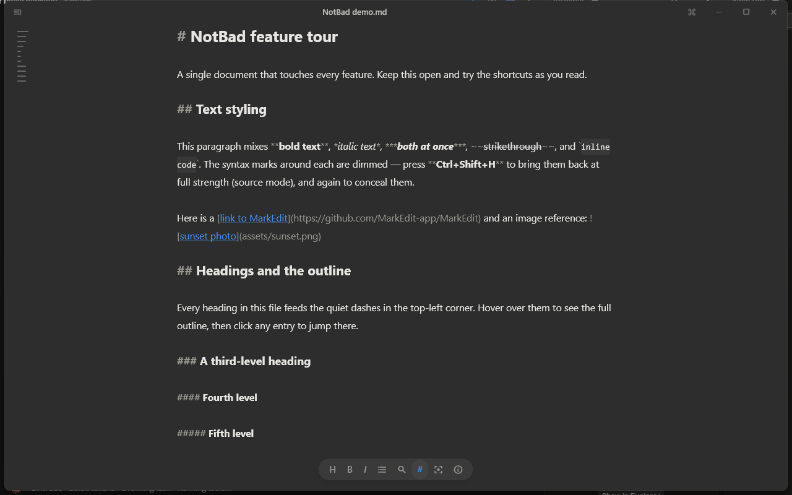
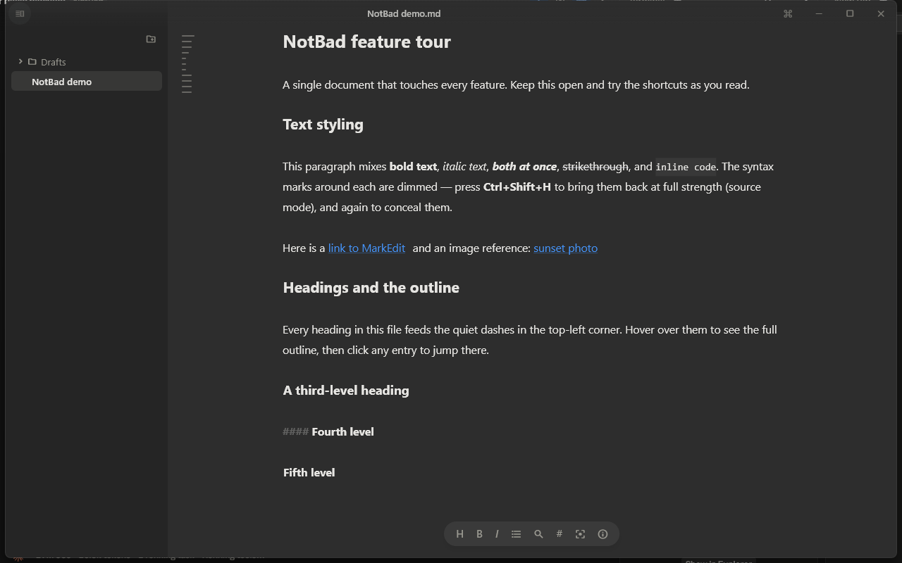
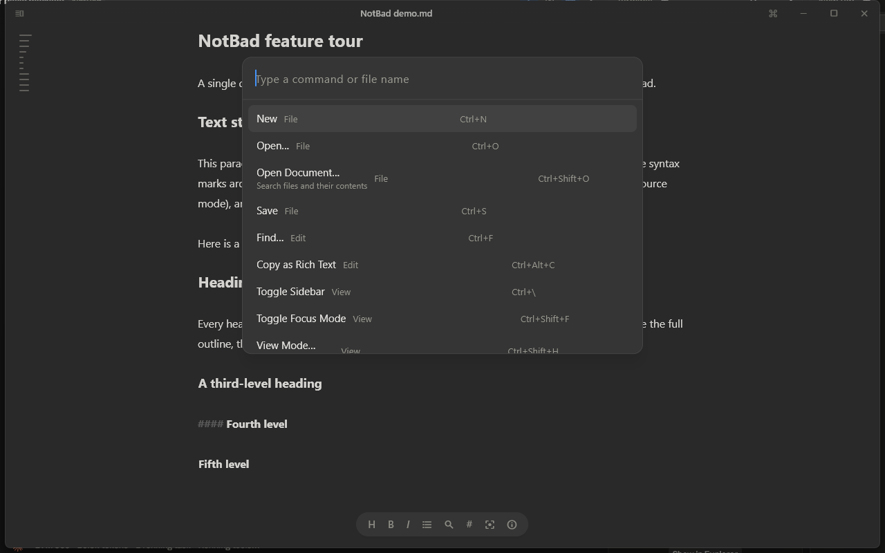
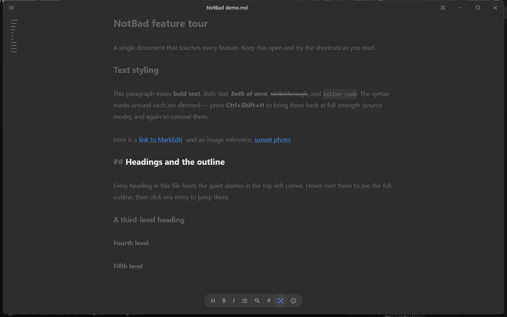

The Words Are the Interface
Designing a distraction-free, native Markdown writing environment for every desktop, and every interaction decision in between.

1. Product Framing
1.1 The Problem
Markdown editors consistently force writers into a false dilemma: either stare at raw syntax marks (#, **, `) while composing, or split the screen with a real-time preview pane. Both solutions introduce plumbing between the writer and their words.
NotBad eliminates this friction by concealing markdown syntax in place directly on the writing canvas. The document on disk remains completely standard, while the visual presentation reads like a finished publication.
"The canvas should feel like Kenya Hara's white — receptive, not sterile. The resting state of the app is a piece of warm paper with your words on it."
1.2 The Bet
NotBad is built from the ground up for Windows, macOS, and Linux as a pure-Flutter desktop application. By implementing the markdown parser and styling directly in Dart via a custom TextEditingController, the app eliminates browser overhead, runs at ~28 MB, and achieves identical typography and responsiveness across all operating systems.
| Dimension | Traditional Desktop Editors (Electron / WebViews) | NotBad (Pure Flutter) |
|---|---|---|
| Supported Platforms | Heavy runtime / uneven across Linux distributions | Windows, macOS, Linux (single codebase) |
| Editor Engine | Chromium / WKWebView + 15k+ lines of JavaScript | Native Dart Controller (~700 lines Dart) |
| App Shell | Node.js / Chromium runtime (>150MB overhead) | Flutter (~3.5k lines Dart) |
| Memory & Footprint | 200MB+ RAM, 100MB+ installer | ~28 MB unpacked, 10.8 MB installer |


1.3 Target Audience & Non-Goals
Designed specifically for prose authors, documentarians, and essayists who maintain their writing in local .md files without cloud locks or proprietary databases.
Deliberate Non-Goals: We explicitly rejected preview panes, split views, extension marketplaces, AI assistants, and 40-button WYSIWYG toolbars. Every feature that puts chrome between the writer and the text was vetoed.
2. Design Principles
3. Information Architecture
The entire product is structured as a single window plus summonable layers. The editor text canvas is the only permanent element on screen.
4. Design Tokens & Color Harmony
All tokens are instantiated in a single immutable TracePalette object in lib/theme.dart. We specifically avoided pure white (#FFFFFF) and developer-oriented bluish-dark (#0D1117).
The light theme uses Warm Paper (#F7F6F3), providing an inviting tactile warmth that prevents eye strain during prolonged writing sessions. In dark mode, Neutral Warm (#2D2D2D) maintains contrast without harsh glare.
The Accent Rule: Accents tint exactly five elements: the text caret, selection highlight (@25%), links, task checkmarks, and active toolbar states. Everything else is grayscale so color always denotes semantic importance.
5. UI Element Deep Dive

5.1 The Receding Toolbar Pill
Docked at the bottom-center with an elevation of 6 and 22px border radius. Rather than occupying permanent vertical space, the pill fades to 0 opacity in 250ms the moment typing begins. As soon as the mouse moves, the pill softly reappears.
5.2 The Ambient Table of Contents
Instead of an intrusive outline sidebar, NotBad renders quiet dashes in the top-left corner. Each dash corresponds to a heading, with width encoding depth (18px for H1, 14px for H2, 10px for H3). Hovering cross-fades the dashes into a full outline card.
5.3 The File Sidebar
A 230px collapsable tree. Two vital design departures from standard IDE file managers:
- Files have no icons: A list of pure names reads faster than a column of identical page glyphs.
- File extensions are hidden: The tree displays "The Architecture of Silence" instead of
The Architecture of Silence.md.

5.4 The Command Palette (Ctrl+K)
The entire capability surface of NotBad is accessible from a 580px centered card. Driven by real user feedback, the original flat 30-item list was refined into a two-level structure with search-through.

5.5 Focus Mode (Ctrl+Shift+F)
When enabled, surrounding paragraphs fade to fg @ 28% opacity, while the caret's paragraph remains at full clarity. Typewriter scrolling keeps the caret vertically centered at all times.

6. The Caret-Line Reveal: Load-Bearing UX
Completely hiding syntax marks makes cursor navigation disorienting (the caret skips over invisible characters or lands in unknown markup). Obsidian solved this by revealing marks on the active line.
In NotBad, concealed marks are rendered as transparent spans at near-zero width. This ensures that find & replace, caret offsets, and text selection never diverge from the raw file on disk.
7. Document Trust & Lifecycle Model
A writer's greatest fear is data loss. NotBad enforces an absolute trust guarantee:
- Crash-Safe Draft Stashing: Untitled buffers are continuously cached to disk and resurrected on next launch.
- Session State Restoration: The app restores your last document and exact caret offset on launch.
- External Change Conflict Resolution: If a document is edited by Git, Dropbox, or an external editor, NotBad detects the mtime difference and prompts before clobbering local changes.
8. The Decision Log
Summary of crucial architectural and UI decisions evaluated during the transition from Trace to NotBad:
WebViews on desktop (especially Linux) are heavy, have high startup latency, and suffer from OS integration inconsistencies. Implementing the editor natively in Dart kept the binary at ~28 MB and start time under 1 second.
Early testing showed that flat command palettes become cluttered past 20 items. Grouping into submenus (Settings → Accent Color) kept the root list clean, while search-through guarantees that typing "azure" immediately selects the accent.
An omnipresent word counter acts as a persistent nag. Hiding it behind an on-demand popover transforms word count into intentional information.
9. Outcomes & Results
NotBad achieved full parity with Trace's aesthetic standards while succeeding where macOS-only apps could not:
- Delivered an identical experience across Windows 10/11, macOS, and Linux from a single codebase.
- Reduced codebase complexity by over 80% (3.5k lines of Dart versus ~42k combined lines of Swift and TypeScript).
- Created a zero-distraction writing environment that boots in ~1 second.
10. Future Design Work
The design roadmap focuses on advancing the pure Dart custom text layout engine:
- Rendered Code Panels: Replacing text fences with rounded containers featuring language badges and copy actions.
- Interactive Inline Elements: Rendering real checkbox widgets and inline image attachments.
- Hunspell Spellcheck: Quiet squiggly error marks powered by local dictionaries.
- Accessibility & Localization Pass: Screen-reader validation for concealed spans and RTL support.